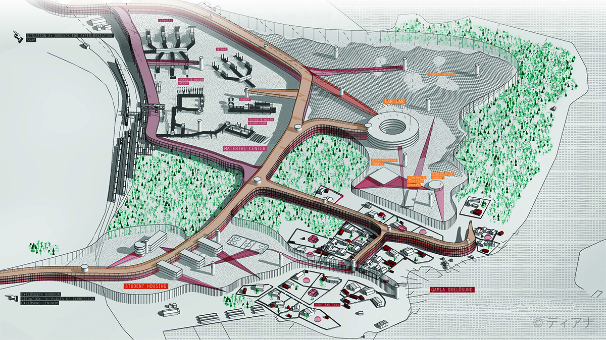
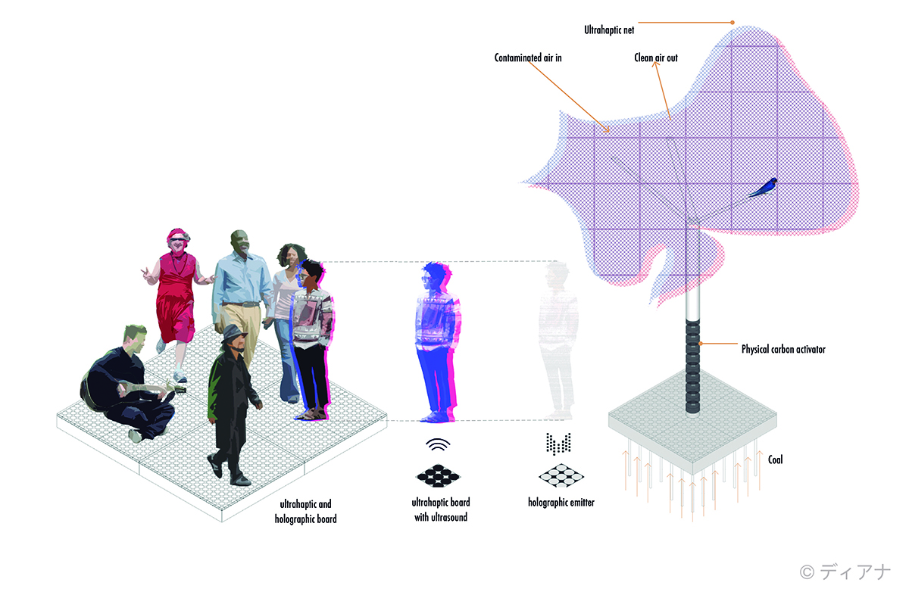
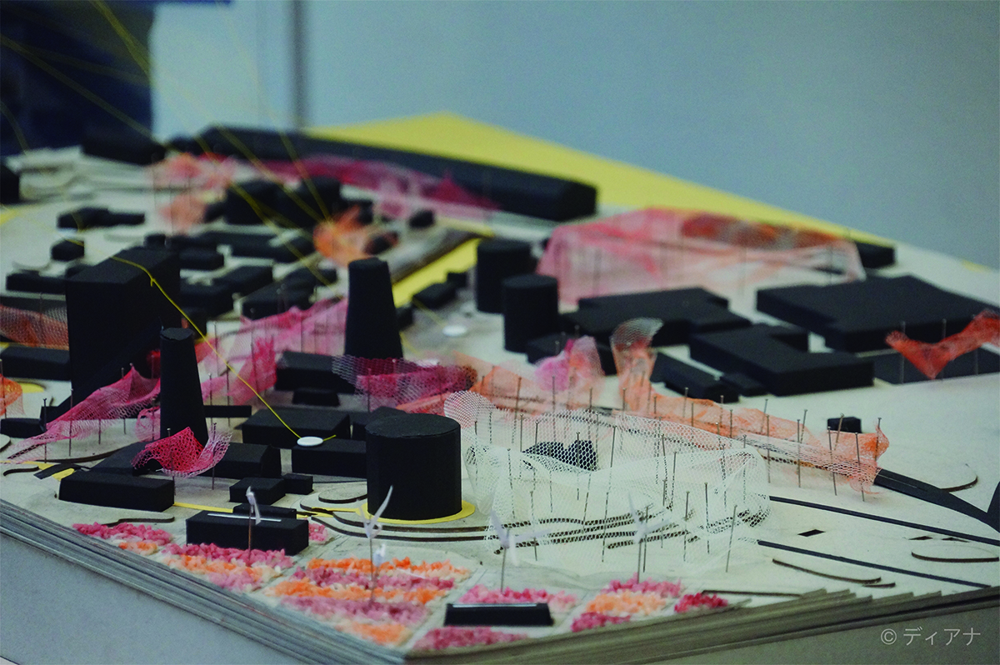

Resources for recreation | Axonometric view | Diana Carrillo Silva
Human-Machine Partnerships
Master's Project
This project is developed in the industrial area of Oxelösund, speculating on its future with the help of ultrahaptic technologies. This techonolgy uses ultrasounds to create a sensorial illusion. This future is designed based on 2 situations for 2050:
- Grounds for experimentation. A post-industrial park assuming iron is not still produced or needed due to the existence of haptic technology. However its infrastructure remains as ruins of a pollutant past. Haptic trees help to remediate the polluted air and soil.
- Resources for recreation. Exploring the relationship between humans and haptic technology in every day lives. How would haptic technology replace actual materials? Would this technology enhance humans’ creativity? What are the effects of this technology on the urban form?
 Ultrahaptic Technology | Diagram | Teamwork
- Ultrahaptics are integrated with holograms and can therefore be seen and touched.
- Ultrahaptic objects are not permeable, but are waterproof.
- Ultrahaptic projections appropriate the material properties of the original objects.
- Ultrahaptic projections are 50% opaque and 50% transparent.
- Modules send small ultrasound vibrations into the air, projecting volumes with tactile feedback.
- Modules are interconnected and communicate with each other in order to be aware of all the ultrahaptic volumes being projected within one designated area.
- The module can produce a maximum projection height of 4 meters.
- The machine stops projecting volumes once these are not in use.
- Within one's own property lines, ultrahaptics can be used in any possible way.
- However, there’s a specified limit for energy usage for each person to create haptic objects.
Conditions for haptic technologies
 Grounds for experimentation | Model | Teamwork